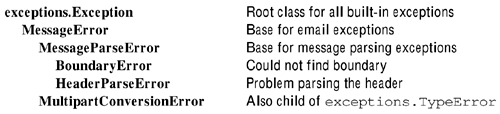

| [ Team LiB ] |
|
5.1 Working with Email and NewsgroupsPython provides extensive support in its standard library for working with email (and newsgroup) messages. There are three general aspects to working with email, each supported by one or more Python modules.
Although existing applications are likely to use rfc822, mimify, mimetools, MimeWriter, and multifile, the package email contains more up-to-date and better-designed implementations of the same capabilities. The former modules are discussed only in synopsis while the various subpackages of email are documented in detail. There is one aspect of working with email that all good-hearted people wish was unnecessary. Unfortunately, in the real-world, a large percentage of email is spam, viruses, and frauds; any application that works with collections of messages practically demands a way to filter out the junk messages. While this topic generally falls outside the scope of this discussion, readers might benefit from my article, "Spam Filtering Techniques," at: A flexible Python project for statistical analysis of message corpora, based on naive Bayesian and related models, is SpamBayes: 5.1.1 Manipulating and Creating Message Texts
Without repeating the whole of RFC-2822, it is worth mentioning the basic structure of an email or newsgroup message. Messages may themselves be stored in larger text files that impose larger-level structure, but here we are concerned with the structure of a single message. An RFC-2822 message, like most Internet protocols, has a textual format, often restricted to true 7-bit ASCII. A message consists of a header and a body. A body in turn can contain one or more "payloads." In fact, MIME multipart/* type payloads can themselves contain nested payloads, but such nesting is comparatively unusual in practice. In textual terms, each payload in a body is divided by a simple, but fairly long, delimiter; however, the delimiter is pseudo-random, and you need to examine the header to find it. A given payload can either contain text or binary data using base64, quoted printable, or another ASCII encoding (even 8-bit, which is not generally safe across the Internet). Text payloads may either have MIME type text/* or compose the whole of a message body (without any payload delimiter). An RFC-2822 header consists of a series of fields. Each field name begins at the beginning of a line and is followed by a colon and a space. The field value comes after the field name, starting on the same line, but potentially spanning subsequence lines. A continued field value cannot be left aligned, but must instead be indented with at least one space or tab. There are some moderately complicated rules about when field contents can split between lines, often dependent upon the particular type of value a field holds. Most field names occur only once in a header (or not at all), and in those cases their order of occurrence is not important to email or news applications. However, a few field names—notably Received—typically occur multiple times and in a significant order. Complicating headers further, field values can contain encoded strings from outside the ASCII character set. The most important element of the email package is the class email.Message.Message, whose instances provide a data structure and convenience methods suited to the generic structure of RFC-2822 messages. Various capabilities for dealing with different parts of a message, and for parsing a whole message into an email.Message.Message object, are contained in subpackages of the email package. Some of the most common facilities are wrapped in convenience functions in the top-level namespace. A version of the email package was introduced into the standard library with Python 2.1. However, email has been independently upgraded and developed between Python releases. At the time this chapter was written, the current release of email was 2.4.3, and this discussion reflects that version (and those API details that the author thinks are most likely to remain consistent in later versions). I recommend that, rather than simply use the version accompanying your Python installation, you download the latest version of the email package from <http://mimelib.sourceforge.net> if you intend to use this package. The current (and expected future) version of the email package is directly compatible with Python versions back to 2.1. See this book's Web site, <http://gnosis.cx/TPiP/>, for instructions on using email with Python 2.0. The package is incompatible with versions of Python before 2.0. CLASSESSeveral children of email.Message.Message allow you to easily construct message objects with special properties and convenient initialization arguments. Each such class is technically contained in a module named in the same way as the class rather than directly in the email namespace, but each is very similar to the others. email.MIMEBase.MIMEBase(maintype, subtype, **params)Construct a message object with a Content-Type header already built. Generally this class is used only as a parent for further subclasses, but you may use it directly if you wish:
>>> mess = email.MIMEBase.MIMEBase('text','html',charset='us-ascii')
>>> print mess
From nobody Tue Nov 12 03:32:33 2002
Content-Type: text/html; charset="us-ascii"
MIME-Version: 1.0
email.MIMENonMultipart.MIMENonMultipart(maintype, subtype, **params)Child of email.MIMEBase.MIMEBase, but raises MultipartConversionError on calls to .attach(). Generally this class is used for further subclassing. email.MIMEMultipart.MIMEMultipart([subtype="mixed" [boundary, [,*subparts [,**params]]]])Construct a multipart message object with subtype subtype. You may optionally specify a boundary with the argument boundary, but specifying None will cause a unique boundary to be calculated. If you wish to populate the message with payload object, specify them as additional arguments. Keyword arguments are taken as parameters to the Content-Type header.
>>> from email.MIMEBase import MIMEBase
>>> from email.MIMEMultipart import MIMEMultipart
>>> mess = MIMEBase('audio','midi')
>>> combo = MIMEMultipart('mixed', None, mess, charset='utf-8')
>>> print combo
From nobody Tue Nov 12 03:50:50 2002
Content-Type: multipart/mixed; charset="utf-8";
boundary="===============5954819931142521=="
MIME-Version: 1.0
--===============5954819931142521==
Content-Type: audio/midi
MIME-Version: 1.0
--===============5954819931142521==--
email.MIMEAudio.MIMEAudio(audiodata [,subtype [,encoder [,**params]]])Construct a single part message object that holds audio data. The audio data stream is specified as a string in the argument audiodata. The Python standard library module sndhdr is used to detect the signature of the audio subtype, but you may explicitly specify the argument subtype instead. An encoder other than base64 may be specified with the encoder argument (but usually should not be). Keyword arguments are taken as parameters to the Content-Type header.
>>> from email.MIMEAudio import MIMEAudio
>>> mess = MIMEAudio(open('melody.midi').read())
SEE ALSO: sndhdr 397; email.MIMEImage.MIMEImage(imagedata [,subtype [,encoder [,**params]]])Construct a single part message object that holds image data. The image data is specified as a string in the argument imagedata. The Python standard library module imghdr is used to detect the signature of the image subtype, but you may explicitly specify the argument subtype instead. An encoder other than base64 may be specified with the encoder argument (but usually should not be). Keyword arguments are taken as parameters to the Content-Type header.
>>> from email.MIMEImage import MIMEImage
>>> mess = MIMEImage(open('landscape.png').read())
SEE ALSO: imghdr 396; email.MIMEText.MIMEText(text [,subtype [,charset]])Construct a single part message object that holds text data. The data is specified as a string in the argument text. A character set may be specified in the charset argument:
>>> from email.MIMEText import MIMEText
>>> mess = MIMEText(open('TPiP.tex').read(),'latex')
FUNCTIONSemail.message_from_file(file [,_class=email.Message.Message [,strict=0]])Return a message object based on the message text contained in the file-like object file. This function call is exactly equivalent to: email.Parser.Parser(_class, strict).parse(file) SEE ALSO: email.Parser.Parser.parse() 363; email.message_from_string(s [,_class=email.Message.Message [,strict=0]])Return a message object based on the message text contained in the string s. This function call is exactly equivalent to: email.Parser.Parser(_class, strict).parsestr(file) SEE ALSO: email.Parser.Parser.parsestr() 363;
The module email.Encoder contains several functions to encode message bodies of single part message objects. Each of these functions sets the Content-Transfer-Encoding header to an appropriate value after encoding the body. The decode argument of the .get_payload() message method can be used to retrieve unencoded text bodies. FUNCTIONSemail.Encoders.encode_quopri(mess)Encode the message body of message object mess using quoted printable encoding. Also sets the header Content-Transfer-Encoding. email.Encoders.encode_base64(mess)Encode the message body of message object mess using base64 encoding. Also sets the header Content-Transfer-Encoding. email.Encoders.encode_7or8bit(mess)Set the Content-Transfer-Encoding to 7bit or 8bit based on the message payload; does not modify the payload itself. If message mess already has a Content-Transfer-Encoding header, calling this will create a second one—it is probably best to delete the old one before calling this function. SEE ALSO: email.Message.Message.get_payload() 360; quopri 162; base64 158;
Exceptions within the email package will raise specific errors and may be caught at the desired level of generality. The exception hierarchy of email.Errors is shown in Figure 5.1. Figure 5.1. Standard email.Errors exceptions SEE ALSO: exceptions 44;
The module email.Generator provides support for the serialization of email.Message.Message objects. In principle, you could create other tools to output message objects to specialized formats—for example, you might use the fields of an email.Message.Message object to store values to an XML format or to an RDBMS. But in practice, you almost always want to write message objects to standards-compliant RFC-2822 message texts. Several of the methods of email.Message.Message automatically utilize email.Generator. CLASSESemail.Generator.Generator(file [,mangle_from_=l [,maxheaderlen=78]])Construct a generator instance that writes to the file-like object file. If the argument mangle_from_ is specified as a true value, any occurrence of a line in the body that begins with the string From followed by a space is prepended with >. This (non-reversible) transformation prevents BSD mailboxes from being parsed incorrectly. The argument maxheaderlen specifies where long headers will be split into multiple lines (if such is possible). email.Generator.DecodedGenerator(file [,mangle_from_ [,maxheaderlen [,fmt]]])Construct a generator instance that writes RFC-2822 messages. This class has the same initializers as its parent email.Generator.Generator, with the addition of an optional argument fmt. The class email.Generator.DecodedGenerator only writes out the contents of text/* parts of a multipart message payload. Nontext parts are replaced with the string fmt, which may contain keyword replacement values. For example, the default value of fmt is: [Non-text (%(type)s) part of message omitted, filename %(filename)s] Any of the keywords type, maintype, subtype, filename, description, or encoding may be used as keyword replacements in the string fmt. If any of these values is undefined by the payload, a simple description of its unavailability is substituted. METHODS email.Generator.Generator.clone()
|
|
email.Header • Manage headers with non-ASCII values |
The module email.Charset provides fine-tuned capabilities for managing character set conversions and maintaining a character set registry. The much higher-level interface provided by email.Header provides all the capabilities that almost all users need in a friendlier form.
The basic reason why you might want to use the email.Header module is because you want to encode multinational (or at least non-US) strings in email headers. Message bodies are somewhat more lenient than headers, but RFC-2822 headers are still restricted to using only 7-bit ASCII to encode other character sets. The module email.Header provides a single class and two convenience functions. The encoding of non-ASCII characters in email headers is described in a number of RFCs, including RFC-2045, RFC-2046, RFC-2047, and most directly RFC-2231.
Construct an object that holds the string or Unicode string s. You may specify an optional charset to use in encoding s; absent any argument, either us-ascii or utf-8 will be used, as needed.
Since the encoded string is intended to be used as an email header, it may be desirable to wrap the string to multiple lines (depending on its length). The argument maxlinelen specifies where the wrapping will occur; header_name is the name of the header you anticipate using the encoded string with—it is significant only for its length. Without a specified header_name, no width is set aside for the header field itself. The argument continuation_ws specified what whitespace string should be used to indent continuation lines; it must be a combination of spaces and tabs.
Instances of the class email.Header.Header implement a .__str__() method and therefore respond to the built-in str() function and the print command. Normally the built-in techniques are more natural, but the method email.Header.Header.encode() performs an identical action. As an example, let us first build a non-ASCII string:
>>> from unicodedata import lookup
>>> lquot = lookup("LEFT-POINTING DOUBLE ANGLE QUOTATION MARK")
>>> rquot = lookup("RIGHT-POINTING DOUBLE ANGLE QUOTATION MARK")
>>> s = lquot + "Euro-style" + rquot + " quotation"
>>> s
u'\xabEuro-style\xbb quotation'
>>> print s.encode('iso-8859-1')
Euro-style quotation
Using the string s, let us encode it for an RFC-2822 header:
>>> from email.Header import Header >>> print Header(s) =?utf-8?q?=C2=ABEuro-style=C2=BB_quotation?= >>> print Header(s,'iso-8859-1') =?iso-8859-1?q?=ABEuro-style=BB_quotation?= >>> print Header(s, 'utf-16') =?utf-16?b?/v8AqwBFAHUAcgBvACOAcwBOAHkAbABl?= =?utf-16?b?/v8AuwAgAHEAdQBvAHQAYQBOAGkAbwBu?= >>> print Header(s,'us-ascii') =?utf-8?q?=C2=ABEuro-style=C2=BB_quotation?=
Notice that in the last case, the email.Header.Header initializer did not take too seriously my request for an ASCII character set, since it was not adequate to represent the string. However, the class is happy to skip the encoding strings where they are not needed:
>>> print Header('"US-style" quotation')
"US-style" quotation
>>> print Header('"US-style" quotation','utf-8')
=?utf-8?q?=22US-style=22_quotation?=
>>> print Header('"US-style" quotation','us-ascii')
"US-style" quotation
Add the string or Unicode string s to the end of the current instance content, using character set charset. Note that the charset of the added text need not be the same as that of the existing content.
>>> subj = Header(s,'latin-1',65)
>>> print subj
=?iso-8859-1?q?=ABEuro-style=BB_quotation?=
>>> unicodedata.name(omega), unicodedata.name(Omega)
('GREEK SMALL LETTER OMEGA', 'GREEK CAPITAL LETTER OMEGA')
>>> subj.append(', Greek: ', 'us-ascii')
>>> subj.append(Omega, 'utf-8')
>>> subj.append(omega, 'utf-16')
>>> print subj
=?iso-8859-1?q?=ABEuro-style=BB_quotation?=, Greek:
=?utf-8?b?zqk=?= =?utf-16?b?/v8DyQ==?=
>>> unicode(subj)
u'\xabEuro-style\xbb quotation, Greek: \u03a9\u03c9'
Return an ASCII string representation of the instance content.
Return a list of pairs describing the components of the RFC-2231 string held in the header object header. Each pair in the list contains a Python string (not Unicode) and an encoding name.
>>> email.Header.decode_header(Header('spam and eggs'))
[('spam and eggs', None)]
>>> print subj
=?iso-8859-1?q?=ABEuro-style=BB_quotation?=, Greek:
=?utf-8?b?zqk=?= =?utf-16?b?/v8DyQ==?=
>>> for tup in email.Header.decode_header(subj): print tup
...
('\xabEuro-style\xbb quotation', 'iso-8859-1')
(', Greek:', None)
('\xce\xa9', 'utf-8')
('\xfe\xff\x03\xc9', 'utf-16')
These pairs may be used to construct Unicode strings using the built-in unicode() function. However, plain ASCII strings show an encoding of None, which is not acceptable to the unicode() function.
>>> for s,enc in email.Header.decode_header(subj): ... enc = enc or 'us-ascii' ... print `unicode(s, enc)' ... u'\xabEuro-style\xbb quotation' u', Greek:' u'\u03a9' u'\u03c9'
SEE ALSO: unicode() 423; email.Header.make_header() 354;
Construct a header object from a list of pairs of the type returned by the function email.Header.decode-header(). You may also, of course, easily construct the list decoded_seq manually, or by other means. The three arguments maxlinelen, header_name, and continuation_ws are the same as with the email.Header.Header class.
>>> email.Header.make.header([('\xce\xa9','utf-8'),
... ('-man','us-ascii')]).encode()
'=?utf-8?b?zqk=?=-man'
SEE ALSO: email.Header.decode_header() 353; email.Header.Header 351;
|
email.Iterators • Iterate through components of messages |
The module email.Iterators provides several convenience functions to walk through messages in ways different from email.Message.Message.get_payload() or email.Message.Message.walk().
Return a generator object that iterates through each content line of the message object mess. The entire body that would be produced by str(mess) is reached, regardless of the content types and nesting of parts. But any MIME delimiters are omitted from the returned lines.
>>> import email.MIMEText, email.Iterators
>>> mess1 = email.MIMEText.MIMEText('message one')
>>> mess2 = email.MIMEText.MIMEText('message two')
>>> combo = email.Message.Message()
>>> combo.set_type('multipart/mixed')
>>> combo.attach(mess1)
>>> combo.attach(mess2)
>>> for line in email.Iterators.body_line_iterator(combo):
... print line
...
message one
message two
Return a generator object that iterates through each subpart of message whose type matches maintype. If a subtype subtype is specified, the match is further restricted to maintype/subtype.
Write a "pretty-printed" representation of the structure of the body of message mess. Output to the file-like object file.
>>> email.Iterators._structure(combo)
multipart/mixed
multipart/digest
image/png
text/plain
audio/mp3
text/html
SEE ALSO: email.Message.Message.get_payload() 360; email.Message.Message.walk() 362;
|
email.Message • Class representing an email message |
A message object that utilizes the email.Message module provides a large number of syntactic conveniences and support methods for manipulating an email or news message. The class email.Message.Message is a very good example of a customized datatype. The built-in str() function—and therefore also the print command—cause a message object to produce its RFC-2822 serialization.
In many ways, a message object is dictionary-like. The appropriate magic methods are implemented in it to support keyed indexing and assignment, the built-in len() function, containment testing with the in keyword, and key deletion. Moreover, the methods one expects to find in a Python dict are all implemented by email.Message.Message:has_key(), .keys(), .values (), .items(), and .get(). Some usage examples are helpful:
>>> import mailbox, email, email.Parser
>>> mbox = mailbox.PortableUnixMailbox(open('mbox'),
... email.Parser.Parser().parse)
>>> mess = mbox.next()
>>> len(mess) # number of headers
16
>>> 'X-Status' in mess # membership testing
1
>>> mess.has_key('X-AGENT') # also membership test
0
>>> mess['x-agent'] = "Python Mail Agent"
>>> print mess['X-AGENT'] # access by key
Python Mail Agent
>>> del mess['X-Agent'] # delete key/val pair
>>> print mess['X-AGENT']
None
>>> [fld for (fld,val) in mess.items() if fld=='Received']
['Received', 'Received', 'Received', 'Received', 'Received']
This is dictionary-like behavior, but only to an extent. Keys are case-insensitive to match email header rules. Moreover, a given key may correspond to multiple values—indexing by key will return only the first such value, but methods like .keys(), .items(), or .get_all() will return a list of all the entries. In some other ways, an email.Message.Message object is more like a list of tuples, chiefly in guaranteeing to retain a specific order to header fields.
A few more details of keyed indexing should be mentioned. Assigning to a keyed field will add an additional header, rather than replace an existing one. In this respect, the operation is more like a list.append() method. Deleting a keyed field, however, deletes every matching header. If you want to replace a header completely, delete first, then assign.
The special syntax defined by the email.Message.Message class is all for manipulating headers. But a message object will typically also have a body with one or more payloads. If the Content-Type header contains the value multipart/*, the body should consist of zero or more payloads, each one itself a message object. For single part content types (including where none is explicitly specified), the body should contain a string, perhaps an encoded one. The message instance method .get_payload(), therefore, can return either a list of message objects or a string. Use the method .is_multipart() to determine which return type is expected.
As the epigram to this chapter suggests, you should strictly follow content typing rules in messages you construct yourself. But in real-world situations, you are likely to encounter messages with badly mismatched headers and bodies. Single part messages might claim to be multipart, and vice versa. Moreover, the MIME type claimed by headers is only a loose indication of what payloads actually contain. Part of the mismatch comes from spammers and virus writers trying to exploit the poor standards compliance and lax security of Microsoft applications—a malicious payload can pose as an innocuous type, and Windows will typically launch apps based on filenames instead of MIME types. But other problems arise not out of malice, but simply out of application and transport errors. Depending on the source of your processed messages, you might want to be lenient about the allowable structure and headers of messages.
SEE ALSO: UserDict 24; UserList 28;
Construct a message object. The class accepts no initialization arguments.
Add a header to the message headers. The header field is field, and its value is value.The effect is the same as keyed assignment to the object, but you may optionally include parameters using Python keyword arguments.
>>> import email.Message
>>> msg = email.Message.Message()
>>> msg['Subject'] = "Report attachment"
>>> msg.add_header('Content-Disposition','attachment',
... filename='report17.txt')
>>> print msg
From nobody Mon Nov 11 15:11:43 2002
Subject: Report attachment
Content-Disposition: attachment; filename="report17.txt"
Serialize the message to an RFC-2822-compliant text string. If the unixfrom argument is specified with a true value, include the BSD mailbox "From_" envelope header. Serialization with str() or print includes the "From_" envelope header.
Add a payload to a message. The argument mess must specify an email.Message.Message object. After this call, the payload of the message will be a list of message objects (perhaps of length one, if this is the first object added). Even though calling this method causes the method .is_multipart () to return a true value, you still need to separately set a correct multipart/* content type for the message to serialize the object.
>>> mess = email.Message.Message()
>>> mess.is_multipart()
0
>>> mess.attach(email.Message.Message())
>>> mess. is_multipart ()
1
>>> mess.get_payload()
[<email.Message.Message instance at 0x3b2ab0>]
>>> mess.get_content_type()
'text/plain'
>>> mess.set_type('multipart/mixed')
>>> mess.get_content_type()
'multipart/mixed'
If you wish to create a single part payload for a message object, use the method email.Message.Message.set-payload().
SEE ALSO: email.Message.Message.set_payload() 362;
Remove the parameter param from a header. If the parameter does not exist, no action is taken, but also no exception is raised. Usually you are interested in the Content-Type header, but you may specify a different header argument to work with another one. The argument requote controls whether the parameter value is quoted (a good idea that does no harm).
>>> mess = email.Message.Message()
>>> mess.set_type('text/plain')
>>> mess.set_param('charset','us-ascii')
>>> print mess
From nobody Mon Nov 11 16:12:38 2002
MIME-Version: 1.0
Content-Type: text/plain; charset="us-ascii"
>>> mess.del_param('charset')
>>> print mess
From nobody Mon Nov 11 16:13:11 2002
MIME-Version: 1.0
content-type: text/plain
Message bodies that contain MIME content delimiters can also have text that falls outside the area between the first and final delimiter. Any text at the very end of the body is stored in email.Message.Message.epilogue.
SEE ALSO: email.Message.Message.preamble 361;
Return a list of all the headers with the field name field. If no matches exist, return the value specified in argument failobj. In most cases, header fields occur just once (or not at all), but a few fields such as Received typically occur multiple times.
The default nonmatch return value of None is probably not the most useful choice. Returning an empty list will let you use this method in both if tests and iteration context:
>>> for rcv in mess.get_all('Received',[]):
... print rcv
...
About that time
A little earlier
>>> if mess.get_all('Foo',[]):
... print "Has Foo header(s)"
Return the MIME message boundary delimiter for the message. Return failobj if no boundary is defined; this should always be the case if the message is not multipart.
Return a list of string descriptions of contained character sets.
Return a string description of the message character set.
For message mess, equivalent to mess.get_content_type().split ("/") [0].
For message mess, equivalent to mess.get_content_type().split ("/") [1].
Return the MIME content type of the message object. The return string is normalized to lowercase and contains both the type and subtype, separated by a /.
>>> msg_photo.get_content_type() 'image/png' >>> msg_combo.get_content_type() 'multipart/mixed' >>> msg_simple.get_content_type() 'text/plain'
Return the current default type of the message. The default type will be used in decoding payloads that are not accompanied by an explicit Content-Type header.
Return the filename parameter of the Content-Disposition header. If no such parameter exists (perhaps because no such header exists), failobj is returned instead.
Return the parameter param of the header header. By default, use the Content-Type header. If the parameter does not exist, return failobj. If the argument unquote is specified as a true value, the quote marks are removed from the parameter.
>>> print mess.get_param('charset',unquote=l)
us-ascii
>>> print mess.get_param('charset',unquote=0)
"us-ascii"
SEE ALSO: email.Message.Message.set_param() 362;
Return all the parameters of the header header. By default, examine the Content-Type header. If the header does not exist, return failobj instead. The return value consists of a list of key/val pairs. The argument unquote removes extra quotes from values.
>>> print mess.get_params(header="To")
[('<mertz@gnosis.cx>', '')]
>>> print mess.get_params(unquote=0)
[('text/plain', ''), ('charset', '"us-ascii"')]
Return the message payload. If the message method is_multipart() returns true, this method returns a list of component message objects. Otherwise, this method returns a string with the message body. Note that if the message object was created using email.Parser.HeaderParser, then the body is treated as single part, even if it contains MIME delimiters.
Assuming that the message is multipart, you may specify the i argument to retrieve only the indexed component. Specifying the i argument is equivalent to indexing on the returned list without specifying i. If decode is specified as a true value, and the payload is single part, the returned payload is decoded (i.e., from quoted printable or base64).
I find that dealing with a payload that may be either a list or a text is somewhat awkward. Frequently, you would like to simply loop over all the parts of a message body, whether or not MIME multiparts are contained in it. A wrapper function can provide uniformity:
#!/usr/bin/env python
"Write payload list to separate files"
import email, sys
def get_payload_list(msg, decode=l):
payload = msg.get_payload(decode=decode)
if type(payload) in [type(""), type(u"")]:
return [payload]
else:
return payload
mess = email.message_from_file(sys.stdin)
for part,num in zip(get_payload_list(mess),range(1000)):
file = open('%s.%d' % (sys.argv[1], num), 'w')
print >> file, part
SEE ALSO: email.Parser 363; email.Message.Message.is_multipart() 361; email.Message.Message.walk() 362;
Return the BSD mailbox "From_" envelope header, or None if none exists.
SEE ALSO: mailbox 372;
Return a true value if the message is multipart. Notice that the criterion for being multipart is having multiple message objects in the payload; the Content-Type header is not guaranteed to be multipart/* when this method returns a true value (but if all is well, it should be).
SEE ALSO: email.Message.Message.get_payload() 360;
Message bodies that contain MIME content delimiters can also have text that falls outside the area between the first and final delimiter. Any text at the very beginning of the body is stored in email.Message.Message.preamble.
SEE ALSO: email.Message.Message.epilogue 358;
Replaces the first occurrence of the header with the name field with the value value. If no matching header is found, raise KeyError.
Set the boundary parameter of the Content-Type header to s. If the message does not have a Content-Type header, raise HeaderParserError. There is generally no reason to create a boundary manually, since the email module creates good unique boundaries on it own for multipart messages.
Set the current default type of the message to ctype. The default type will be used in decoding payloads that are not accompanied by an explicit Content-Type header.
Set the parameter param of the header header to the value value. If the argument requote is specified as a true value, the parameter is quoted. The arguments charset and language may be used to encode the parameter according to RFC-2231.
Set the message payload to a string or to a list of message objects. This method overwrites any existing payload the message has. For messages with single part content, you must use this method to configure the message body (or use a convenience message subclass to construct the message in the first place).
SEE ALSO: email.Message.Message.attach() 357; email.MIMEText.MIMEText 348; email.MIMEImage.MIMEImage 348; email.MIMEAudio.MIMEAudio 347;
Set the content type of the message to ctype, leaving any parameters to the header as is. If the argument requote is specified as a true value, the parameter is quoted. You may also specify an alternative header to write the content type to, but for the life of me, I cannot think of any reason you would want to.
Set the BSD mailbox envelope header. The argument s should include the word From and a space, usually followed by a name and a date.
SEE ALSO: mailbox 372;
Recursively traverse all message parts and subparts of the message. The returned iterator will yield each nested message object in depth-first order.
>>> for part in mess.walk(): ... print part.get_content_type() multipart/mixed text/html audio/midi
SEE ALSO: email.Message.Message.get_payload() 360;
|
email.Parser • Parse a text message into a message object |
There are two parsers provided by the email.Parser module: email.Parser.Parser and its child email.Parser.HeaderParser. For general usage, the former is preferred, but the latter allows you to treat the body of an RFC-2822 message as an unparsed block. Skipping the parsing of message bodies can be much faster and is also more tolerant of improperly formatted message bodies (something one sees frequently, albeit mostly in spam messages that lack any content value as well).
The parsing methods of both classes accept an optional headersonly argument. Specifying headersonly has a stronger effect than using the email.Parser.HeaderParser class. If headersonly is specified in the parsing methods of either class, the message body is skipped altogether—the message object created has an entirely empty body. On the other hand, if email.Parser.HeaderParser is used as the parser class, but headersonly is specified as false (the default), the body is always read as a single part text, even if its content type is multipart/*.
Construct a parser instance that uses the class _class as the message object constructor. There is normally no reason to specify a different message object type. Specifying strict parsing with the strict option will cause exceptions to be raised for messages that fail to conform fully to the RFC-2822 specification. In practice, "lax" parsing is much more useful.
Construct a parser instance that is the same as an instance of email.Parser.Parser except that multipart messages are parsed as if they were single part.
Return a message object based on the message text found in the file-like object file. If the optional argument headersonly is given a true value, the body of the message is discarded.
Return a message object based on the message text found in the string s. If the optional argument headersonly is given a true value, the body of the message is discarded.
|
email.Utils • Helper functions for working with messages |
The module email.Utils contains a variety of convenience functions, mostly for working with special header fields.
Return a decoded string for RFC-2231 encoded string s:
>>> Omega = unicodedata.lookup("GREEK CAPITAL LETTER OMEGA")
>>> print email.Utils.encode_rfc2231(Omega+'-man@gnosis.cx')
%3A9-man%40gnosis.cx
>>> email.Utils.decode_rfc2231("utf-8"%3A9-man%40gnosis.cx")
('utf-8', '', ':9-man@gnosis.cx')
Return an RFC-2231-encoded string from the string s. A charset and language may optionally be specified.
Return a formatted address from pair (realname,addr):
>>> email.Utils.formataddr(('David Mertz','mertz@gnosis.cx'))
'David Mertz <mertz@gnosis.cx>'
Return an RFC-2822-formatted date based on a time value as returned by time.localtime(). If the argument localtime is specified with a true value, use the local timezone rather than UTC. With no options, use the current time.
>>> email.Utils.formatdate() 'Wed, 13 Nov 2002 07:08:01 -0000'
Return a list of pairs (realname,addr) based on the list of compound addresses in argument addresses.
>>> addrs = ['"Joe" <jdoe@nowhere.lan>','Jane <jroe@other.net>']
>>> email.Utils.getaddresses(addrs)
[('Joe', 'jdoe@nowhere.lan'), ('Jane', 'jroe@other.net')]
Return a unique string suitable for a Message-ID header. If the argument seed is given, incorporate that string into the returned value; typically a seed is the sender's domain name or other identifying information.
>>> email.Utils.make_msgid('gnosis')
'<20021113071050.3861.13687.gnosis@localhost>'
Return a timestamp based on an email.Utils.parsedate_tz() style tuple.
>>> email.Utils.mktime_tz((2001, 1, 11, 14, 49, 2, 0, 0, 0, 0)) 979224542.0
Parse a compound address into the pair (realname,addr).
>>> email.Utils.parseaddr('David Mertz <mertz@gnosis.cx>')
('David Mertz', 'mertz@gnosis.cx')
Return a date tuple based on an RFC-2822 date string.
>>> email.Utils.parsedate('11 Jan 2001 14:49:02 -0000')
(2001, 1, 11, 14, 49, 2, 0, 0, 0)
SEE ALSO: time 86;
Return a date tuple based on an RFC-2822 date string. Same as email.Utils.parsedate(), but adds a tenth tuple field for offset from UTC (or None if not determinable).
Return a string with backslashes and double quotes escaped.
>>> print email.Utils.quote(r'"MyPath" is d:\this\that') \"MYPath\" is d:\\this\\that
Return a string with surrounding double quotes or angle brackets removed.
>>> print email.Utils.unquote('<mertz@gnosis.cx>')
mertz@gnosis.cx
>>> print email.Utils.unquote('"us-ascii"')
us-ascii
|
imaplib • IMAP4 client |
The module imaplib supports implementing custom IMAP clients. This protocol is detailed in RFC-1730 and RFC-2060. As with the discussion of other protocol libraries, this documentation aims only to cover the basics of communicating with an IMAP server—many methods and functions are omitted here. In particular, of interest here is merely being able to retrieve messages—creating new mailboxes and messages is outside the scope of this book.
The Python Library Reference describes the POP3 protocol as obsolescent and recommends the use of IMAP4 if your server supports it. While this advice is not incorrect technically—IMAP indeed has some advantages—in my experience, support for POP3 is far more widespread among both clients and servers than is support for IMAP4. Obviously, your specific requirements will dictate the choice of an appropriate support library.
Aside from using a more efficient transmission strategy (POP3 is line-by-line, IMAP4 sends whole messages), IMAP4 maintains multiple mailboxes on a server and also automates filtering messages by criteria. A typical (simple) IMAP4 client application might look like the one below. To illustrate a few methods, this application will print all the promising subject lines, after deleting any that look like spam. The example does not itself retrieve regular messages, only their headers.
#!/usr/bin/env python
import imaplib, sys
if len(sys.argv) == 4:
sys.argv.append('INBOX')
(host, user, passwd, mbox) = sys.argv[1:]
i = imaplib.IMAP4(host, port=143)
i.login(user, passwd)
resp = i.select(mbox)
if r[0] <> 'OK':
sys.stderr.write("Could not select %s\n" % mbox)
sys.exit()
# delete some spam messages
typ, spamlist = i.search(None, '(SUBJECT) "URGENT"')
i.store(','.join(spamlist.split()),'+FLAGS.SILENT','\deleted')
i.expunge()
typ, messnums = i.search(None,'ALL').split()
for mess in messnums:
typ, header = i.fetch(mess, 'RFC822.HEADER')
for line in header[0].split('\n'):
if string.upper(line[:9]) == 'SUBJECT: ':
print line[9:]
i.close()
i.logout()
There is a bit more work to this than in the POP3 example, but you can also see some additional capabilities. Unfortunately, much of the use of the imaplib module depends on passing strings with flags and commands, none of which are well-documented in the Python Library Reference or in the source to the module. A separate text on the IMAP protocol is probably necessary for complex client development.
Create an IMAP instance object to manage a host connection.
Close the currently selected mailbox, and delete any messages marked for deletion. The method imaplib.IMAP4.logout() is used to actually disconnect from the server.
Permanently delete any messages marked for deletion in the currently selected mailbox.
Return a pair (typ,datalist). The first field typ is either OK or NO, indicating the status. The second field datalist is a list of returned strings from the fetch request. The argument message_set is a comma-separated list of message numbers to retrieve. The message_parts describe the components of the messages retrieved—header, body, date, and so on.
Return a (typ,datalist) tuple of all the mailboxes in directory dirname that match the glob-style pattern pattern. datalist contains a list of string names of mailboxes. Contrast this method with imaplib.IMAP4.search(), which returns numbers of individual messages from the currently selected mailbox.
Connect to the IMAP server specified in the instance initialization, using the authentication information given by user and passwd.
Disconnect from the IMAP server specified in the instance initialization.
Return a (typ,messnums) tuple where messnums is a space-separated string of message numbers of matching messages. Message criteria specified in criterion1, and so on may either be ALL for all messages or flags indicating the fields and values to match.
Select the current mailbox for operations such as imaplib.IMAP4.search() and imaplib.IMAP4.expunge(). The argument mbox gives the name of the mailbox, and readonly allows you to prevent modification to a mailbox.
SEE ALSO: email 345; poplib 368; smtplib 370;
|
poplib • A POP3 client class |
The module poplib supports implementing custom POP3 clients. This protocol is detailed in RFC-1725. As with the discussion of other protocol libraries, this documentation aims only to cover the basics of communicating with a POP3 server—some methods or functions may be omitted here.
The Python Library Reference describes the POP3 protocol as obsolescent and recommends the use of IMAP4 if your server supports it. While this advice is not incorrect technically—IMAP indeed has some advantages—in my experience, support for POP3 is far more widespread among both clients and servers than is support for IMAP4. Obviously, your specific requirements will dictate the choice of an appropriate support library.
A typical (simple) POP3 client application might look like the one below. To illustrate a few methods, this application will print all the promising subject lines, and retrieve and delete any that look like spam. The example does not itself retrieve regular messages, only their headers.
#!/usr/bin/env python
import poplib, sys, string
spamlist = []
(host, user, passwd) = sys.argv[1:]
mbox = poplib.POP3(host)
mbox.user(user)
mbox.pass_(passwd)
for i in range(1, mbox.stat()[0]+1):
# messages use one-based indexing
headerlines = mbox.top(i, 0)[1] # No body lines
for line in headerlines:
if string.upper(line[:9]) == 'SUBJECT: ':
if -1 <> string.find(line,'URGENT'):
spam = string.join(mbox.retr(i)[1],'\n')
spamlist.append(spam)
mbox.dele(i)
else:
print line[9:]
mbox.quit()
for spam in spamlist:
report_to_spamcop(spam) # assuming this func exists
The poplib module provides a single class that establishes a connection to a POP3 server at host host, using port port.
Log in to a server using APOP authentication.
Mark a message for deletion. Normally the actual deletion does not occur until you log off with poplib.POP3.quit(), but server implementations differ.
Set the password to use when communicating with the POP server.
Log off from the connection to the POP server. Logging off will cause any pending deletions to be carried out. Call this method as soon as possible after you establish a connection to the POP server; while you are connected, the mailbox is locked against receiving any incoming messages.
Return the message numbered messnum (using one-based indexing). The return value is of the form (resp,linelist,octets), where linelist is a list of the individual lines in the message. To re-create the whole message, you will need to join these lines.
Unmark any messages marked for deletion. Since server implementations differ, it is not good practice to mark messages using poplib.POP3.dele() unless you are pretty confident you want to erase them. However, poplib.POP3.rset() can usually save messages should unusual circumstances occur before the connection is logged off.
Retrieve the initial lines of message messnum. The header is always included, along with lines lines from the body. The return format is the same as with poplib.POP3.retr(), and you will typically be interested in offset 1 of the returned tuple.
Retrieve the status of the POP mailbox in the format (messcount,mbox_size). messcount gives you the total number of message pending; mbox_size is the total size of all pending messages.
Set the username to use when communicating with the POP server.
SEE ALSO: email 345; smtplib 370; imaplib 366;
|
smtplib • SMTP/ESMTP client class |
The module smtplib supports implementing custom SMTP clients. This protocol is detailed in RFC-821 and RFC-1869. As with the discussion of other protocol libraries, this documentation aims only to cover the basics of communicating with an SMTP server—most methods and functions are omitted here. The modules poplib and imaplib are used to retrieve incoming email, and the module smtplib is used to send outgoing email.
A typical (simple) SMTP client application might look like the one below. This example is a command-line tool that accepts as a parameters the mandatory To message envelope header, constructs the From using environment variables, and sends whatever text is on STDIN. The To and From are also added as RFC-822 headers in the message header.
#!/usr/bin/env python
import smtplib
from sys import argv, stdin
from os import getenv
host = getenv('HOST', 'localhost')
if len(argv) >= 2:
to_ = argv[1]
else:
to_ = raw_input('To: ').strip()
if len(argv) >=3:
subject = argv[2]
body = stdin.read()
else:
subject = stdin.readline()
body = subject + stdin.read()
from_ = "%s@%s" % (getenv('USER', 'user'), host)
mess = '''From: %s\nTo: %s\n\n%s' % (to_, from_, body)
server = smtp.SMTP(host)
server.login
server.sendmail(from_, to_, mess)
server.quit()
Create an instance object that establishes a connection to an SMTP server at host host, using port port.
Login to an SMTP server that requires authentication. Raises an error if authentication fails.
Not all—or even most—SMTP servers use password authentication. Modern servers support direct authentication, but since not all clients support SMTP authentication, the option is often disabled. One commonly used strategy to prevent "open relays" (servers that allow malicious/spam messages to be sent through them) is "POP before SMTP." In this arrangement, an IP address is authorized to use an SMTP server for a period of time after that same address has successfully authenticated with a POP3 server on the same machine. The timeout period is typically a few minutes to hours.
Terminate an SMTP connection.
Send the message mess with From envelope from_, to recipients to_. The argument to_ may either be a string containing a single address or a Python list of addresses. The message should include any desired RFC-822 headers. ESMTP options may be specified in arguments mail_options and rcpt_options.
SEE ALSO: email 345; poplib 368; imaplib 366;
|
mailbox • Work with mailboxes in various formats |
The module mailbox provides a uniform interface to email messages stored in a variety of popular formats. Each class in the mailbox module is initialized with a mailbox of an appropriate format, and returns an instance with a single method .next(). This instance method returns each consecutive message within a mailbox upon each invocation. Moreover, the .next () method is conformant with the iterator protocol in Python 2.2+, which lets you loop over messages in recent versions of Python.
By default, the messages returned by mailbox instances are objects of the class rfc822.Mailbox. These message objects provide a number of useful methods and attributes. However, the recommendation of this book is to use the newer email module in place of the older rfc822. Fortunately, you may initialize a mailbox class using an optional message constructor. The only constraint on this constructor is that it is a callable object that accepts a file-like object as an argument—the email module provides two logical choices here.
>>> import mailbox, email, email.Parser
>>> mbox = mailbox.PortableUnixMailbox(open('mbox'))
>>> mbox.next()
<rfc822.Message instance at Ox41d770>
>>> mbox = mailbox.PortableUnixMailbox(open('mbox'),
... email.message_from_file)
>>> mbox.next()
<email.Message.Message instance at Ox5e43eO>
>>> mbox = mailbox.PortableUnixMailbox(open('mbox'),
... email.Parser.Parser().parse)
>>> mbox.next()
<email.Message.Message instance at Ox6ee630>
In Python 2.2+ you might structure your application as:
#!/usr/bin/env python
from mailbox import PortableUnixMailbox
from email import message_from_file as mff
import sys
folder = open(sys.argv[1])
for message in PortableUnixMailbox(folder, mff):
# do something with the message...
print message['Subject']
However, in earlier versions, this same code will raise an AttributeError for the missing .__getitem__() magic method. The slightly less elegant way to write the same application in an older Python is:
#!/usr/bin/env python
"Subject printer, older Python and rfc822.Message objects"
import sys
from mailbox import PortableUnixMailbox
mbox = PortableUnixMailbox(open(sys.argv[1]))
while 1:
message = mbox.next()
if message is None:
break
print message.getheader('Subject')
Read a BSD-style mailbox from the file-like object file. If the optional argument factory is specified, it must be a callable object that accepts a file-like object as its single argument (in this case, that object is a portion of an underlying file).
A BSD-style mailbox divides messages with a blank line followed by a "Unix From_" line. In this strict case, the "From_" line must have name and time information on it that matches a regular expression. In most cases, you are better off using mailbox.PortableUnixMailbox, which relaxes the requirement for recognizing the next message in a file.
The arguments to this class are the same as for mailbox.UnixMailbox. Recognition of the messages within the mailbox file depends only on finding From followed by a space at the beginning of a line. In practice, this is as much as you can count on if you cannot guarantee that all mailboxes of interest will be created by a specific application and version.
The arguments to this class are the same as for mailbox.UnixMailbox. Handles mailbox files in Babyl format.
The arguments to this class are the same as for mailbox.UnixMailbox. Handles mailbox files in MMDF format.
The MH format uses the directory structure of the underlying native filesystem to organize mail folders. Each message is held in a separate file. The initializer argument for mailbox.MHMailbox is a string giving the name of the directory to be processed. The factory argument is the same as with mailbox.UnixMailbox.
The QMail format, like the MH format, uses the directory structure of the underlying native filesystem to organize mail folders. The initializer argument for mailbox.Maildir is a string giving the name of the directory to be processed. The factory argument is the same as with mailbox.UnixMailbox.
SEE ALSO: email 345; poplib 368; imaplib 366; nntplib 397; smtplib 370; rfc822 397;
|
mimetypes • Guess the MIME type of a file |
The mimetypes module maps file extensions to MIME datatypes. At its heart, the module is a dictionary, but several convenience functions let you work with system configuration files containing additional mappings, and also query the mapping in some convenient ways. As well as actual MIME types, the mimetypes module tries to guess file encodings, for example, compression wrapper.
In Python 2.2+, the mimetypes module also provides a mimetypes.MimeTypes class that lets instances each maintain their own MIME types mapping, but the requirement for multiple distinct mapping is rare enough not to be worth covering here.
Return a pair (typ, encoding) based on the file or Uniform Resource Locator (URL) named by url. If the strict option is specified with a true value, only officially specified types are considered. Otherwise, a larger number of widespread MIME types are examined. If either type or encoding cannot be guessed, None is returned for that value.
>>> import mimetypes
>>> mimetypes.guess_type('x.abc.gz')
(None, 'gzip')
>>> mimetypes.guess_type('x.tgz')
('application/x-tar', 'gzip')
>>> mimetypes.guess_type('x.ps.gz')
('application/postscript', 'gzip')
>>> mimetypes.guess_type('x.txt')
('text/plain', None)
>>> mimetypes.guess_type('a.xyz')
(None, None)
Return a string indicating a likely extension associated with the MIME type. If multiple file extensions are possible, one is returned (generally the one that is first alphabetically, but this is not guaranteed). The argument strict has the same meaning as in mimetypes.guess-type().
>>> print mimetypes.guess_extension('application/EDI-Consent')
None
>>> print mimetypes.guess_extension('application/pdf')
.pdf
>>> print mimetypes.guess_extension('application/postscript')
.ai
Add the definitions from each filename listed in list-of-files to the MIME type mapping. Several default files are examined even if this function is not called, but additional configuration files may be added as needed on your system. For example, on my MacOSX system, which uses somewhat different directories than a Linux system, I find it useful to run:
>>> mimetypes.init(['/private/etc/httpd/mime.types.default', ... '/private/etc/httpd/mime.types'])
Notice that even if you are specifying only one additional configuration file, you must enclose its name inside a list.
Read the single file named fname and return a dictionary mapping extensions to MIME types.
>>> from mimetypes import read_mime_types
>>> types = read_mime_types('/private/etc/httpd/mime.types')
>>> for _ in range(5): print types.popitem()
...
('.wbxml', 'application/vnd.wap.wbxml')
('.aiff', 'audio/x-aiff')
('.rm', 'audio/x-pn-realaudio')
('.xbm', 'image/x-xbitmap')
('.avi', 'video/x-msvideo')
Dictionary of widely used, but unofficial MIME types.
True value if the module has been initialized.
Dictionary of encodings.
List of files checked by default.
Dictionary of encoding suffixes.
Dictionary mapping extensions to MIME types.
| [ Team LiB ] |
|